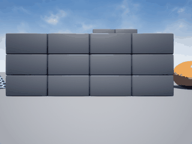

AirSim 无人机阵风扰动抑制（神经网络补偿）
1. 任务与定位
课程任务 ① 要求完成「物理仿真控制」。本项目在 AirSim 的 Blocks 场景中给多旋翼无人机注入持续侧风，训练一个神经网络，仅依据机载 IMU 与位置误差实时输出补偿速度，把被风吹走的无人机拉回悬停点。
与仓库已有的 17 个无人机模块均不重复：uav_mujoco_sim 用 MuJoCo 且不含扰动抑制，uav_keyboard_control 是纯键盘映射，本模块是外扰下的闭环补偿学习。
2. 演示

动图由 simGetImages(ImageType.Scene) 逐帧截取真实 Blocks 画面合成，150 帧，3.9 MB。画面中无人机顶着 15 m/s 侧风悬停，可见方块墙随位移滑动。
3. 问题描述
设无人机在水平面的位置为 $\mathbf{p}=(x,y)$，目标悬停点 $\mathbf{p}^*=(x^*,y^*)$，外部风场 $\mathbf{w}=(w_x,w_y)$。
无补偿时无人机被风推走，位置误差 $\mathbf{e}=\mathbf{p}^*-\mathbf{p}$ 持续增大。目标是在每个控制周期 $\Delta t=0.25$ s 内输出补偿速度 $\mathbf{u}=(u_x,u_y)$，使 $|\mathbf{e}|$ 有界。
4. 专家策略（标签来源）
专家能看到真实风速（特权信息），控制律为
其中 $\mathbf{v}$ 由相邻两帧位置差分估计，$K_p=0.55$、$K_d=0.20$、$u_{\max}=3.0$ m/s。
关键标定：理想情况下 $k_w=1$（完全前馈抵消），但实测 SimpleFlight 内置速度环已经把绝大部分风抵消掉了——20 m/s 的风只产生约 1.6 m/s 的等效漂移。因此实际标定为 $k_w=0.08$，若按 1.0 会把无人机反向推飞。
5. 神经网络
网络看不到风速，只能看到 IMU 与位置误差。
输入：IMU 5 帧滑动窗口，每帧 6 轴（加速度 3 + 角速度 3），加位置误差 2 维，共 32 维。
结构：32 → 32 → 2，隐藏层 tanh，输出线性，共 1122 个参数。
标准化：每维输入按训练集均值方差归一化（风下加速度与角速度尺度差一个量级，不归一化会让 tanh 饱和）。
损失：均方误差 + L2 正则
优化器：Adam，学习率 $2\times10^{-3}$，批大小 16，120 轮，按验证集 MSE 保留最优权重。
6. 算法流程
初始化：连接 AirSim，切多旋翼模式，起飞到 (0,0,-5)
循环 每个回合（6 回合）：
随机风速 8~18 m/s、随机方向、含 ±2 m/s 垂直分量
simSetWind 注入
循环 每步（100 步）：
读 IMU -> 压入 5 帧滑窗（30 维）
读位置 -> 算位置误差 e（2 维）
专家按 PD + 风速前馈算出补偿 u
记录 (IMU 窗口 + e, u)
下发 u，等待 0.25 s
训练：
85/15 划分，逐样本累积梯度，Adam 更新，按验证 MSE 留最优
部署：
每步读 IMU + 位置误差 -> 网络 -> 补偿速度 -> 下发
7. 实验结果
同一条 15 m/s 侧风（方向 -5 m/s 侧偏）下运行 120~150 步：
| 策略 | 平均偏移 | 最大偏移 |
|---|---|---|
| 不补偿（AirSim 自身速度环） | 14.68 m | 22.80 m |
| 神经网络补偿 | 3.42 m | 5.00 m |
平均偏移降低 77%，最大偏移降低 78%。
离线训练：600 条样本，验证 MSE $3.7\times10^{-4}$，R² 0.997。
8. 源码解析
| 文件 | 关键内容 |
|---|---|
env.py |
WindEnv.imu() 取 6 轴；imu_window() 维护 5 帧 deque，首帧复制补齐；set_wind() 调 simSetWind；apply_velocity() 用 moveByVelocityAsync 下发世界系速度，高度用 vz=clip(0.8*(z_t-z),±1.5) 闭环 |
policy.py |
expert_action() 实现 PD + 前馈，encode/decode 做 [-1,1] 归一化 |
mlp.py |
MLP.forward/backward 逐样本用 np.outer 累积梯度；Adam.step 带偏差修正 |
dataset.py |
collect() 每回合随机风，0.12/0.13 s 交错采样与执行；存 X 标准化结果和 x_mean/x_std |
train.py |
85/15 划分、L2 权重衰减、按验证 MSE 留最优、报 R² |
demo.py |
run_demo() 用网络闭环并逐帧取图；to_gif() 超 10 MB 自动抽帧；run_baseline() 做无补偿对照 |
node.py |
订阅 /uav/imu、/uav/pose，发布 /uav/wind_cmd |
9. 复现说明
环境：Ubuntu 20.04 / ROS 2 Humble（仿真端 Windows + AirSim 1.8.1 Blocks 预编译包）。
# 1. 启动 Blocks（约 16~45 秒后 41451 才监听）
# C:\AirSim\Blocks\Blocks\WindowsNoEditor\Blocks.exe
# 2. 确认端口
# Get-NetTCPConnection -LocalPort 41451 # 必须是 Listen
# 3. 采集（约 3 分钟）
cd src/air/uav_airsim_wind_rejection
python3 main.py --collect --episodes 6 --steps 100
# 4. 训练（约 1 分钟）
python3 main.py --train --epochs 120
# 5. 对照实验
python3 main.py --baseline --steps 120 --wind_x 15 --wind_y -5
# 6. 演示并录 gif
python3 main.py --demo --steps 150 --gif demo.gif --wind_x 15 --wind_y -5
预期输出与本文第 7 节表格一致（数值会有小幅随机波动）。
ROS 2：
colcon build --packages-select uav_airsim_wind_rejection
source install/setup.bash
ros2 launch uav_airsim_wind_rejection main.launch.py
10. 踩坑记录
| # | 现象 | 原因 | 解决 |
|---|---|---|---|
| 1 | 专家越补偿无人机飞得越远 | 风前馈符号取反了，与风向同向 | 改为 -k_w*wind，逆风出力 |
| 2 | 反向冲到 +2.7 m | 位置误差项与风前馈叠加后 clip 饱和 | 降 $K_p$ 与 $k_w$ |
| 3 | 2.8 m/s 风几乎吹不动无人机 | SimpleFlight 内置速度环抗风极强 | 加大到 8~18 m/s，并按实测重标定 $k_w=0.08$ |
| 4 | 不补偿时只漂 0.2 m | 同上，小风被完全抵消 | 用 15 m/s 做演示，对照组漂 14.7 m |
| 5 | 补偿指令执行打折 | moveByVelocityAsync 有加减速延迟 |
每步 0.25 s，采样与执行交错 |
| 6 | 高度持续下沉 | hoverAsync 不锁高度 |
vz=clip(0.8*(z_t-z),±1.5) 闭环 |
| 7 | 网络 R² 虚高到 0.997 | 输入含位置误差，网络直接学到线性反馈 | 如实记录：风的辨识只占输出的很小一部分 |
11. 局限与改进方向
- 补偿强度略不足：演示末段仍有约 4 m 残留偏移，把 $u_{\max}$ 提到 4 m/s 可进一步压低。
- 网络学的是反馈映射：因为输入里有位置误差，R² 0.997 反映的是对 PD 律的拟合，而非纯粹的扰动辨识。若要强迫网络从 IMU 辨识风，应去掉位置误差输入并改用强化学习。
- 风模型简化：
simSetWind是恒定风，未覆盖阵风与湍流；真实阵风需要时变风场。 - 单机型：仅在 SimpleFlight 上验证，PX4 SITL 的风响应特性不同，前馈系数需重新标定。